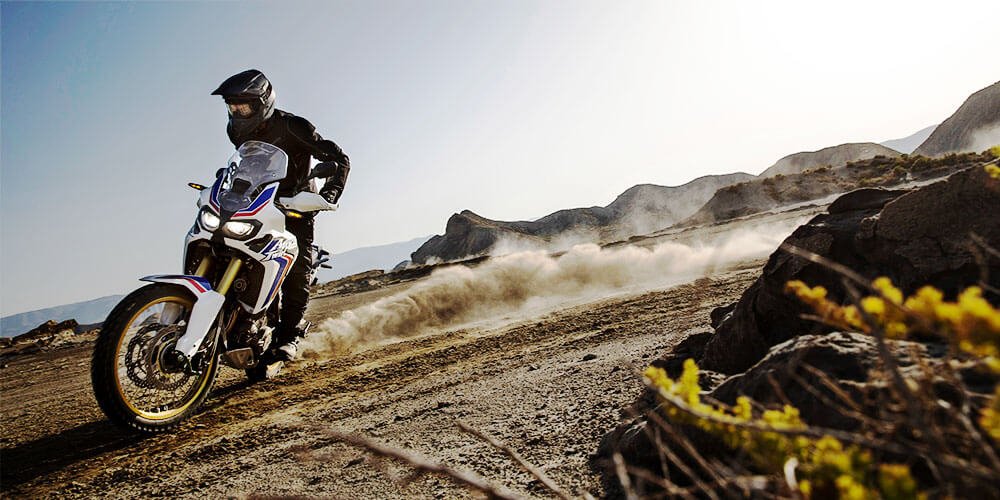

Novitet austrijske fabrike inspirisan je većim i zaista beskompromisnim modelom 1290 Super Duke R, ali je od njega značajno lakši i kompaktniji. Kakav je u vožnji govori i njegov nadimak – KTM 790 Duke je Skalpel
Dizajnerski možda podseća na većeg brata ali sve ostalo je novo. Motor je LC8c redni dvocilindraš od 799 ccm i 105 KS pri 9.000 o/min. Možda će ovo nekima zazvučati malo, ali ne brzajte.
Masa ovog motocikla iznosi samo 169 kg, a maksimalni obrtni moment 82 Nm pri 8.000 obrtaja u minutu. Vozač može odabrati jedan od četiri ponuđena stila vožnje, a dostupni su mi i raznovrsni elektronski sistemi koji će vožnju učiniti bezbednijom.
KTM 790 Duke se na našem tržištu očekuje tokom proleća. Za sada, od fabrike nismo čuli ni jednu reč o tome kolika cena će biti za ovaj motocikl.
Britanski džentlmen – Novi Triumph Bonneville Speedmaster
Prošlo je skoro šest decenija od kako je britanski Triumph proizveo svoj prvi Bonneville motorcikl. U narednoj godini ovaj motor stiže u kastm Bonneville Speedmaster verziji. Triumph je predstavio sopstvenu interpretaciju klasičnog retro kruzera – Bonneville Speedmaster. Na prvi pogled može se videti da su se držali duge tradicije ovog modela jer nas svojim stilom ovaj motor vraća u kasne šezdesete godine prošlog veka.
Motor je promenjen u odnosu na prethodnu generaciju Speedmaster – umesto 865 ccm sada ima vodeno hlađeni motor 1200 ccm od 77 KS i maksimalni obrtni moment od 106 Nm pri 4.000 obrtaja u minuti. Prednji kraj deluje dominantnije zahvaljujući većem rezervoaru (12l umesto 9l) i široj prednjoj gumi. Zahvaljujući povećanju mase, na prednjem točku su sada umesto jednog, dva diska od 310 mm i dvoklipna klješta, uz ABS sistem koji je standard.
Triumph Bonneville Speedmaster opremljen je i sistemom kontrole proklizavanja, LED farom, tempomatom i dva moda Road i Rain. Dostupna su dva paketa; Highway, koji podrazumeva vetrobran, dva udobna sedišta i kožne bisage i Maverick koji je namenjen jednom vozaču, ljubitelju minimalističkog stila i buke koja dolazi iz Vance & Hines izduva.
Spisak dodatne opreme ima čak 130 stavki, pa se motor lako može prilagoditi sopstvenim potrebama. Cena će biti poznata tek početkom naredne godine.
Honda CRF1000L Africa Twin

Honda je potvrdila - legendarni model ovog proizvođača u sasvim novom ruhu biće u prodaji širom planete do kraja 2015. godine. Sinonim za Hondine motocikle svakako je model “afrika tvin”. Prva verzija nastala je na bazi četvorostrukog osvajača Pariz-Dakar relija “NXR-750” davne 1988. sa V tvin motorm od 650 ccm i 56 KS i ocnakom “XRV650 afrika tvin”. Prestao je da se proizvodi 2003. godine, a do tada je stekao stotine hiljade poklonika.
Povratak ovog modela fabrika objavljuje na sva zvona. Još na Salonu motocikala u Milanu prošle godine prikazana je zamaskirana verzija novog modela, a svi tehnički podaci ostali su pod velom tajne. Nedavno je fabrika pustila tizer slike “afrike tvin” koja će u prodaji pojaviti do kraja godine (a ne na jesen kako je ranije planirano).
Honda je i dalje vrlo škrta sa podacima a ono što se zna je da će paralelni tvin motor imati zapreminu od 1000 ccm, dvostruko kvačilo, LCD ekran, Nisinov ABS sistem i ozbiljne of-roud mogućnosti. Za sada, još uvek nije najavljena ni okvirna cena nove “afrike tvin”.